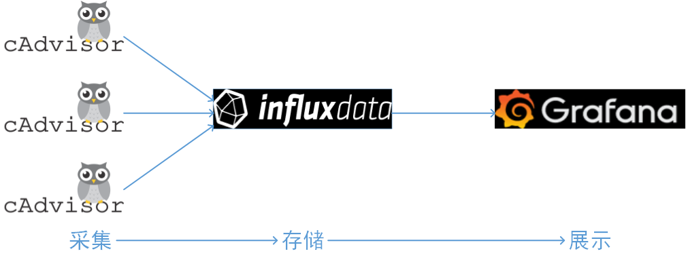
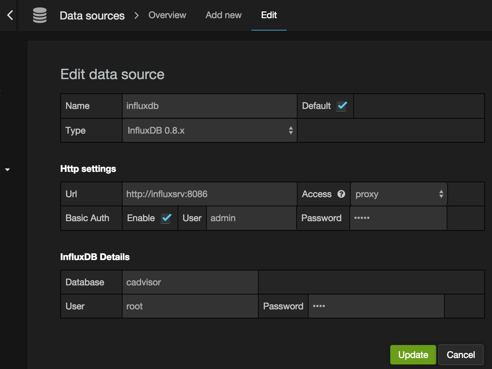

CAdvisor是一个容器资源监控工具，包括容器的内存，CPU，网络IO，磁盘IO等监控，同时提供了一个WEB页面用于查看容器的实时运行状态。CAdvisor默认存储2分钟的数据，而且只是针对单物理机。不过，CAdvisor提供了很多数据集成接口，支持InfluxDB，Redis，Kafka，Elasticsearch等集成，可以加上对应配置将监控数据发往这些数据库存储起来。
跨多台主机上容器的监控
cAdivsor虽然能采集到监控数据，也有很好的界面展示，但是并不能显示跨主机的监控数据，当主机多的情况，需要有一种集中式的管理方法将数据进行汇总展示，最经典的方案就是 cAdvisor+ Influxdb+grafana，可以在每台主机上运行一个cAdvisor容器负责数据采集，再将采集后的数据都存到时序型数据库influxdb中，再通过图形展示工具grafana定制展示面板。结构如下：

这三个工具的安装也非常简单，可以直接启动三个容器快速安装。
InfluxDB重要概念
InfluxDB是一个开源的分布式时序数据库，使用GO语言开发。特别适合用于时序类型数据存储，CAdvisor搜集的容器监控数据用InfluxDB存储就很合适，而且CAdvisor本身就提供了InfluxDB的支持，集成起来非常方便。influxdb有一些重要概念：database，timestamp，field key， field value， field set，tag key，tag value，tag set，measurement， retention policy ，series，point，下面简要说明一下：
- database：数据库，如之前创建的数据库 cadvisor。InfluxDB不是CRUD数据库，更像是一个CR-ud数据库，它优先考虑的是增加和读取数据而不是更新删除数据的性能。
- timestamp：时间戳，因为InfluxDB是时序数据库，它的数据里面都有一列名为time的列，存储记录生成时间。如 rx_bytes 中的 time 列，存储的就是时间戳。
fields: 包括field key，field value和field set几个概念。field key是字段名，在rx_bytes表中，字段名为 value。field value是字段值，如
17858781633，1359398等。而field set是字段集合，由field key和field value构成，如rx_bytes中的字段集合如下：value = 17858781633 value = 1359398在InfluxDB表中，字段必须存在，而且字段是没有索引的。所以，字段相当于传统数据库中没有索引的列。
tags：包括tag key， tag value， tag set几个概念。tag key是标签名，在rx_bytes表中，
container_name,game,machine,namespace，type都是标签。tag value就是标签的值了。tag set就是标签集合，由tag key和tag value构成。InfluxDB中标签是可选的，不过标签是有索引的。如果查询中经常用的字段，建议设置为标签而不是字段。标签相当于传统数据库中有索引的列。retention policy: 数据保留策略，cadvisor的保留策略为
cadvisor_retention，存储30天，副本为1。一个数据库可以有多个保留策略。measurement：类似传统数据看的表，是字段，标签以及time列的集合。
series：共享同一个retention policy，measurement以及tag set的数据集合。
point：同一个series中具有相同时间的字段集合，相当于SQL中的数据行。
InfluxDB的特色功能
InfluxDB作为时序数据库，相比传统数据库它有很多特色功能，比如独有的一些特色函数和连续查询功能。关于InfluxDB的更多详细内容可以参见官方文档。
特色函数：有一些聚合类函数如FILL()用于填充数据, INTEGRAL()计算字段所覆盖的曲面面积，SPREAD()计算表中最大与最小值的差值， STDDEV()计算字段标准差，MEAN()计算平均值, MEDIAN()计算中位数，SAMPLE()函数用于随机取样以及DERIVATIVE()计算数据变化比等。
连续查询：InfluxDB独有的连续查询功能可以定期的缩小取样，就原数据库的数据缩小取样后存储到指定的新的数据库或者新的数据表中，在历史数据统计整理时特别有用。
基于docker-compose.yml文件安装InfluxDB、influxDB、Grafana
基于下面的docker-compose.yml文件安装这三个组件：
version: '2'
services:
influxdbData:
image: busybox
volumes:
- /disk4/influxdb:/data
influxdb:
image: influxdb
restart: always
environment:
- PRE_CREATE_DB=cadvisor
ports:
- "8083:8083"
- "8086:8086"
expose:
- "8090"
- "8099"
volumes_from:
- "influxdbData"
cadvisor:
image: google/cadvisor
links:
- influxdb:influxsrv
command: -storage_driver=influxdb -storage_driver_db=cadvisor -storage_driver_host=influxsrv:8086
restart: always
ports:
- "8080:8080"
volumes:
- /:/rootfs:ro
- /var/run:/var/run:rw
- /sys:/sys:ro
- /var/lib/docker/:/var/lib/docker:ro
grafana:
image: grafana/grafana
restart: always
links:
- influxdb:influxsrv
ports:
- "3001:3000"
environment:
- HTTP_USER=admin
- HTTP_PASS=admin
- INFLUXDB_HOST=influxsrv
- INFLUXDB_PORT=8086
- INFLUXDB_NAME=cadvisor
- INFLUXDB_USER=root
- INFLUXDB_PASS=root
为了存储CAdvisor的数据，需要预先创建好数据库并配置用户名密码以及相关权限。InfluxDB提供了一套influx的CLI，跟mysql client很相似。另外，InfluxDB的数据库操作语言InfluxQL跟SQL语法也基本一致。进入InfluxDB容器，运行下面命令创建数据库和用户密码并授权。
root@ubuntu:~/workspace/docker-monitor/cadvisor-influxdb-grafana# docker exec -it c4d /bin/bash
root@c4ddd2985191:/# influx
Connected to http://localhost:8086 version 1.3.6
InfluxDB shell version: 1.3.6
> create database cadvisor ## 创建数据库cadvisor
> show databases
name: databases
name
----
_internal
cadvisor
> use cadvisor
> CREATE USER 'root' WITH PASSWORD 'root' WITH ALL PRIVILEGES
配置成功后，可以看到CAdvisor会通过InfluxDB的HTTP API自动创建好数据表，并将数据发送到InfluxDB存储起来。
root@c4ddd2985191:/# influx
Connected to http://localhost:8086 version 1.3.6
InfluxDB shell version: 1.3.6
> use cadvisor
Using database cadvisor
> show measurements # 显示数据表与SQL略有不同，用的是关键字measurements
name: measurements
name
----
cpu_usage_per_cpu
cpu_usage_system
cpu_usage_total
cpu_usage_user
fs_limit
fs_usage
load_average
memory_usage
memory_working_set
rx_bytes
rx_errors
tx_bytes
tx_errors
> select * from rx_bytes order by time desc limit 2
name: rx_bytes
time Description Vendor Version com.docker.compose.config-hash com.docker.compose.container-number com.docker.compose.oneoff com.docker.compose.project com.docker.compose.service com.docker.compose.version com.docker.stack.namespace com.docker.swarm.node.id com.docker.swarm.service.id com.docker.swarm.service.name com.docker.swarm.task.id com.docker.swarm.task.name container_name machine maintainer value version
---- ----------- ------ ------- ------------------------------ ----------------------------------- ------------------------- -------------------------- -------------------------- -------------------------- -------------------------- ------------------------ --------------------------- ----------------------------- ------------------------ -------------------------- -------------- ------- ---------- ----- -------
1509002311661632942 /system.slice/lightdm.service 2c8aeeb3c07c 0
1509002311538573198 71cb7f4e7596e83e7e8cf7e44c2d14a44edc08e0f23161baa9dfaa582c4dfa81 1 False logcollectiondocker web 1.16.1 logcollectiondocker_web_1 2c8aeeb3c07c 7803
接下来需要做的就是在Grafana中配置InfluxDB数据源，登录http://localhost:3001 ：
InfluxDB数据源配置完成后，创建dashboard，选择上面创建的数据源，配置相应的指标监控panel。